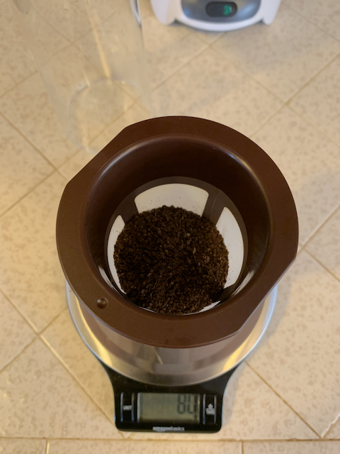
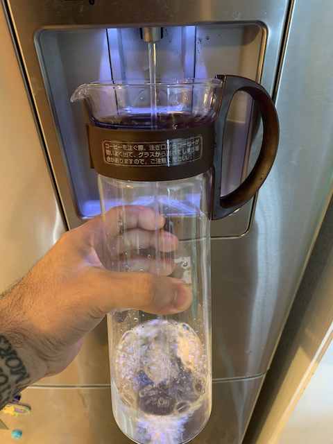
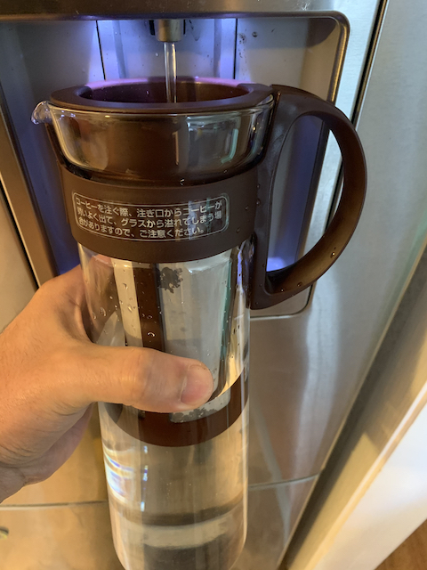
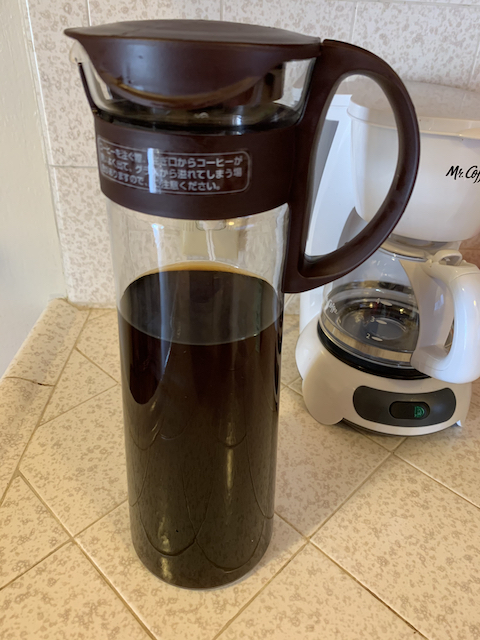

Hi, my name is Oscar and I love coffee. Although waking up early can be rough, holding an iced, cold cup of coffee can make mornings a bit smoother. My love for coffee began one warm early morning at a local coffee shop. I worked as a manager of a high volume restaurant in downtown San Francisco and was looking for an alternative to energy drinks. The only option for cold coffee on the menu was Cold Brew. Luckily, it turned out to be the right option. It tasted smooth and contained plenty of caffeine to get me through the morning rush at the restaurant. I've been a fan ever since.
The process of making Cold Brew coffee can be therapeutical. It's almost like creating a perfect dish for dinner. Making Cold Brew can be very easy if you choose to buy grounded coffee beans. Even if you grind your own beans at home, it is a relatively quick process with only a few steps to the end goal. Nothing says success like a cold, flavorful, perfectly caffeinated cup of coffee.
The first thing you want to do is grind your beans. When making Cold Brew, you want coarsely ground beans. Once your beans are ground, gather the rest of your materials to start brewing.
Once you have ground coffee, weigh out 80 grams in the Hario® filter.
Now add water (preferably filtered water) into you Hario® pot until about the halfway point. Once the pot is half full, add the filter and continue to add water. Stir the coffee occasionally to ensure it is well mixed.
Once the pot is full of water, give it one more good stir to ensure all of the coffee grains are coated in water. Now, just let it soak at room temperature for 8-10 hours. The longer it soaks, the stronger the coffee will be.

After it soaks, be sure to set it in the refrigerator to cool as soon as possible. Or you can simply add ice cubes to your glass if you're in a hurry. To minimize the watered-down effect, make Cold Brew ice cubes!
ENJOY!